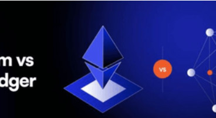
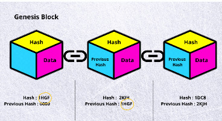
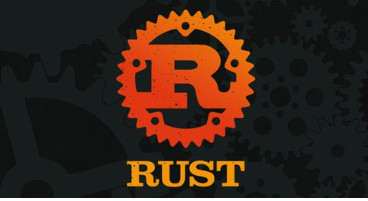

En el desarrollo web, la distinción entre Backend y frontend es fundamental, delineando dos especializaciones
con herramientas, técnicas y objetivos distintos.
más información
Ejemplos de diferentes Blockchain: Ethereum vs Hyperledger

Tenemos principalmente, las redes públicas (que son la mayoría) y las redes privadas.
Los dos tipos comparten características muy importantes, pero se diferencian en
más información
Blockchain para dummies

La tecnología blockchain es la tecnología de moda, sin ninguna duda. En mayor o
menor medida todo el mundo sabe de la existencia de la blockchain, aunque es
más información
¿Para qué sirve la tecnología blockchain?
Habitualmente se asocia la blockchain con las criptomonedas, y es normal.
Son la aplicación de la blockchain más conocida, pero en el artículo de hoy
he querido traerte
más información
¿¿Qué hace un desarrollador de Rust?

Rust es un lenguaje de programación que cada vez está ganando más y más popularidad.
Y no es de extrañar, probablemente es uno de los lenguajes
más información